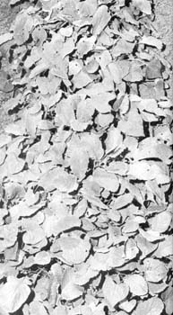

Gardeners: Don't Fear Fall Frosts!
November/December 1972
THIS NEBRASKA VEGETABLE GROWER SAYS THAT YOU'RE CHEATING YOURSELF IF YOU GROW ONLY A SPRING AND SUMMER GARDEN!
Much of my very best vegetables, fruits and berries are harvested long after the first fall frosts. On a recent crisp late October day, my garden provided me with sweet corn, three kinds of summer squash, beans (green, wax and lima), peppers, beets, salsify, parsnips, potatoes, Swiss chard, spinach, celery, strawberries, garden huckleberries, turnips, green peas, black-eyed peas, radishes, lettuce, carrots, tomatoes, cucumbers, winter squash, pumpkins and good, big cantaloupes and watermelons!
THE THREE EASY STEPS TO A LUSH LATE GARDEN
My first step toward having fresh, healthful garden produce in abundance through October and November - even into December - was to stop thinking of autumn frosts as impossible-to-defeat garden-killing monsters.
Frost is beneficial. For one thing, my insect problems halt abruptly when the thermometer drops to 32 degrees the first time. Mature produce, on the other hand, will stay in prime condition on the plant for a much longer time during cool weather.
(l used to pick all my tomatoes just before a predicted frost. Then, a few weeks later - after they had rotted on the shelves - I tossed them out. Now, after following certain rules, I leave 'em on the vines where they stay in good condition even at peak ripeness.) I take a big second step toward enjoying lush late fall and early winter harvests by planting my fall garden in mid and late summer so that the plants are mounting the crest of vigor when first frost comes. I even find that radishes, leaf lettuce and turnips for greens have done well for me when sown after early frost. The third and final step to a successful ultra-late garden is made by taking reasonable natural precautions to reduce the damage caused to plants by frost. I say reduce because a little frost damage is not going to lessen the yield of your fall and early winter gardens. Don't run out and pull out your tomato and squash vines just because the upper foliage has been ruined!
NATURAL PRECAUTIONS THAT CAN REDUCE FROST DAMAGE
Early temperature plunges always cause less damage close to the ground and the first half-dozen frosts usually nip only top foliage. So, I don't stake my late tomatoes and I grow only the kinds that sprawl instead of rising tall and bushy. Late cucumbers are grown on the ground, never on trellises. Bush beans and peas are more logical late garden crops than the climbing varieties. I make my fall garden rows and hills closer together and encourage the plants' foliage to overlap so that the leaves on one plant protect those of another.
Radishes, lettuce, spinach, carrots and turnips are broadcast (rather than planted in rows) to make their foliage create a wide frost-protecting carpet.
As the frost season approaches I stop pulling the weeds in my vegetable patch. Weeds, especially the taller broadleaf types, provide a great deal of shelter from frost and cold wind in return for the small amount of nutrients they rob from a late garden. Later, of course, I dig the weeds under to return these nutrients and organic matter to the soil.
By planting very tender crops - like tomatoes and peppers - on the south side of buildings or solid fences, I have harvested their produce through November. Buildings ward off the cold north wind and heated ones emanate a blanket of slightly warmer air several feet out from their south walls. A foundation-planting of tomatoes against the house looks nice, too.
Water is another good defense against frost damage. Fortunately, the fall season is generally wet. But, if it isn't, keep the soil around frost-threatened crops moist by irrigating or sprinkling. I've saved many crops of tomatoes and melons by allowing a soakerhose to run on them throughout frosty nights.
When the thermometer really takes a nose dive, be prepared to cover the plants you want to save. Boxes, barrels, tubs, thick layers of newspapers . . . find something to pull over those plants! Canvas tarps work fine if you remember to remove them in the early morning when temperatures again rise. Several inches of straw provide even better protection. It "breathes" and you don't have to rake it off as long as weather stays reasonably on the cool side.
GOOD LATE GARDENERS KNOW WHEN TO QUIT
Be reasonable. Don't push your luck too far. When I'm convinced that no amount of protection is going to ward off further frosts, I set about harvesting everything . . . almost. Green tomatoes are individually wrapped in newspaper and stacked in boxes. The newspaper helps the fruit retain moisture and greatly reduces its tendency to rot. Placed in a cool room, wrapped tomatoes ripen nicely to Christmas Day and beyond. Radishes, once steamed and frozen, are better than turnips in soups and stews. Carrots? Leave 'em in the ground and cover with a thick mulch . . . really thick! My crispest-sweetest carrots are dug in mid-winter from under the snows . . . but only when the mulch that protects them is heavy enough to keep the roots from freezing. If your mulch isn't, better dig the carrots and store them in a freezer, cellar or pit.
ADDITIONAL TIPS FOR PLANNING AND PLANTING A LATE GARDEN
Generalized zone charts and average regional frost dates are helpful to "in season" garden planning . . . but they're inefficient guides for extending the gardening season to its outside limits. Weather is a far more localized condition than we ordinarily allow. For example, there may be three days difference in planting dates for every fifty miles of latitude (south, earlier; north, later).
Depending on terrain, frost dates cart vary as much as two or three weeks in a two-block area, also. This situation has often occurred in my community of Raymond (15 miles northwest of Lincoln, Nebraska). Gardeners at the top of a short western slope here are seldom bothered by the first few early light frosts that kill plants in gardens at the base of the hill. A few feet of elevation in some locales, then, can be an important factor.
Further, tomatoes growing on vines planted on a southern slope in my gardens can usually be left safely fifteen days longer in the autumn than those growing on a north slope only a few hundred feet away.
So, you must be your own weatherman. Start by calling the weatherstation nearest your garden to find out average frost dates for your particular area. Also find out the date of the first fall frost of the previous year. These figures will give some indication of the days you have to play with.
More important, chart the local daily lows and highs of the autumn season (such figures are published in the weather section of your newspaper). After doing this for several years, you may find - as I have - that there's only minimal practical relationship between statistical normality and what's actually occurring weatherwise in and around your gardens.
Finally, remember that actual first-frost dates vary greatly from one autumn to the next . . . and some of the best gardening weather usually comes after them.
The Indian summer garden is, physically and philosophically, the most beautiful. It does not whip the whole of winter. . . but t it does serve notice that men, in their quest for eternal summer, are capable of pushing sunlight and growth deeper and deeper into winter's territory.
|
It's well into the light frost season, and this patch of summer squash continues to hear abundantly. Only the foliage has been damaged. The fruit and lower fruit-producing parts of the plants have not been injured. The soil around the squash is mulched with fine wood chips, which-when wet-tend to generate heat around the base of the plants. Little tricks like that can really stretch the ole growing season right into early winter. |
The first light frosts of the season have come and gone . . . and there's still plenty of peppers in this garden. Pick late fruits and vegetables from the top of plants first and leave those lower down until last. Produce that is closer to the soil (especially if that soil is moist and covered with decaying organic material) will be protected from cold weather further into the chillymonths. Decomposing organic matter creates heat as it breaks down. |
 Here's the way smart gardeners plant radishes and turnip greens for fall use: broadcast or .sow the seeds in broad, foot-and-a-half wide swaths. The carpet of foliage reduces chances of frost damage to things like the radish ccrisp radish roots and I've even found that radishes, leaf lettuce and turnips broadcast this way have done well risp radish sown hen sown AFTER early frosts. The same plants grow better in the spring when seeded this way too. |
|
Fall pea plants that blossom before first frost are extremely resistant to damage. Severe frosts, however, will reduce or stop pod production and freeze developed peas. Lettuce and cabbage are unaffected by light and medium frosts and grow superbly during cool fall weather. Radishes, turnips, beets, carrots and chard grow as well in autumn as in spring. Parsnips and salsify should be planted in early spring for early winter harvests. |
 Don't stake late tomatoes . . . not if you want them to survive frosts. Let the plants sprawl as close to the ground as possible, and on a bed of decaying organic mulch if you can. Frost has nipped the leaves of this Roma plant, but 90% of the fruit is still undamaged. Soon, however, it will be time to pick the remaining unripened tomatoes, wrap them in newspaper and store them in a cool room for use as late as Christmas or later. |
Watermelons ripening in the patch suggest a torrid summer day but these beauties were snapped in the Author's Nebraska garden in late October. Hybrid Dixie Queen and Crimson Sweet, planted in July, showed outstanding resistance to insect damage and disease. Green, wax and lima beans harvested in October after top foliage was damaged by frost are plumper, juicier, less stringy and noticeably more tender than summer beans. |